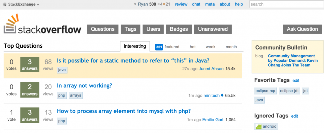
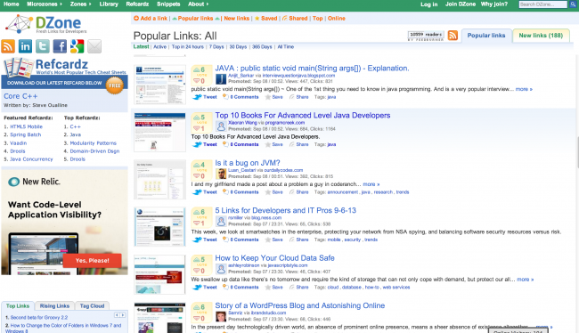
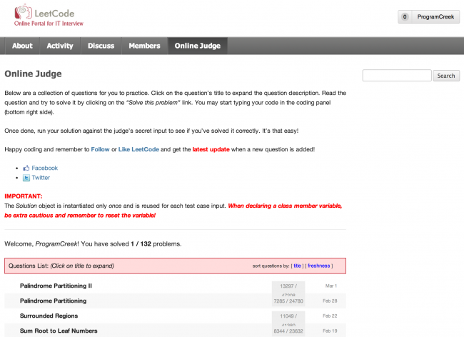
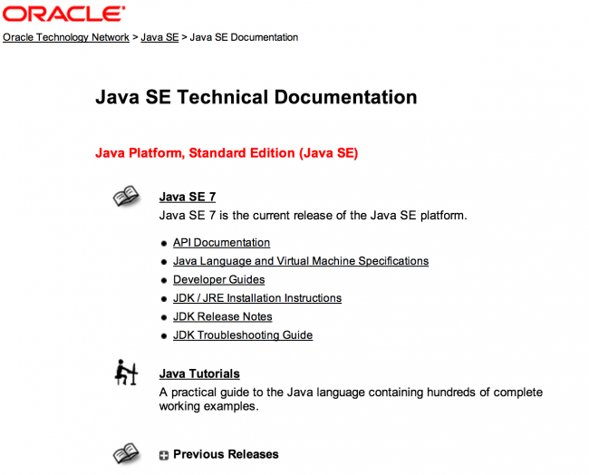
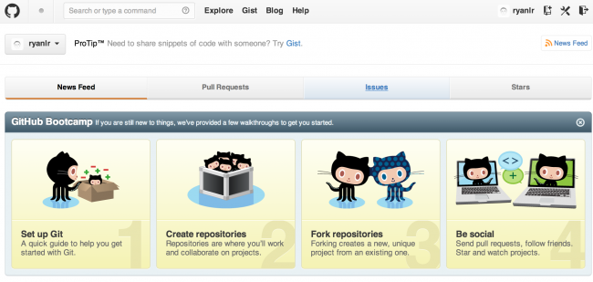
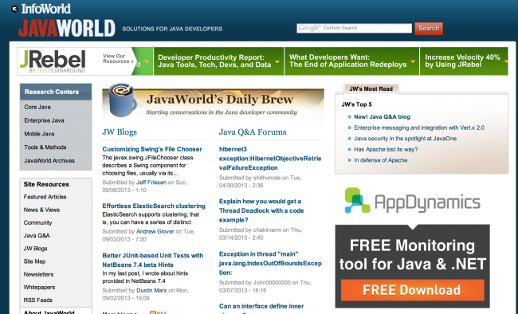
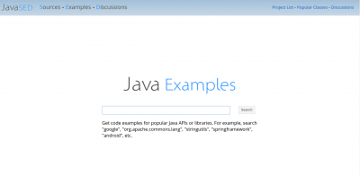
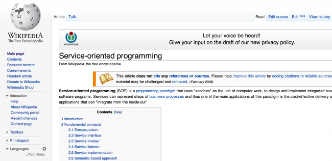
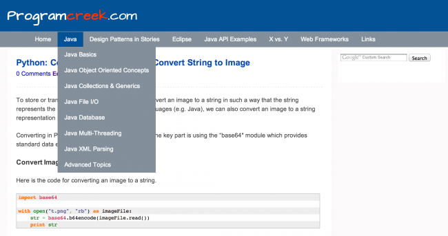

Top 10 Websites for Advanced Level Java Developers
This is my collection of websites for advanced level Java developers. Those website provide news, answers to general questions or interview questions, great lectures, etc. Quality is the key factor of good websites. In my opinion, they all have the highest quality. In the following, I will also share how I use these websites for learning or for fun. You may think some sites are good for any level developers, but I think it is how they are used determines whether they are good sites for an advanced level Java developer.
1. Stackoverflow
Stackoverflow.com is probably the most popular website in the programming world. There are millions of good questions and answers. Learning an API or a programming language often rely on code examples, stackoverflow has a lot of code segments.
Another good thing about stackoverflow is that it is social. You can view questions under some certain tags, e.g. “java” and “regex”, then you can see what question is most frequently asked and most voted. This can serve as a good resource for learning, also a good resource to write popular topics of Java bloggers.

2. DZone
I would say this website is fun, lots of developers share their blog articles. It is like an adventure, you never know what you are going to read next from this site.

URL: http://www.dzone.com
3. LeetCode
If interview question is java specific, like “what array look like in memory in Java”, you can get answers from a lot of Java tutorials. However, if the question is something like “how to convert an sorted array to a balanced tree”, then leetcode is the right place to go. It is a social platform for preparing IT technical interviews and contains a collection of algorithm related questions. The best part is that it also has an online judge which can check if your code is correct or not by feeding different size of data. To be successful in a technical interview, they believe it is mainly repeating these three important steps: code → read → discuss.

URL: http://leetcode.com/
4. Java SE Technical Documentation
This website contains all documents you will need to use API of Java SE. Even if you are an advanced level Java developer, I’m pretty sure that you will find something useful and official here. For example, you can read some tutorials of “Essential Java Classes”, “Deployment”, etc.

URL: http://docs.oracle.com/javase/
5. Github
You probably know that you can host your projects for free there, but you may not know it is an excellent resource for learning popular Java libraries and frameworks. For instance, if you want to learn Spring MVC framework, you can search and find some open source projects. As the “monkey see monkey do” rule works for learning frameworks, you will be able to learn the frameworks quickly by examples, especially if you already have some experience with similar frameworks.

URL: https://github.com/
6. Coursera
This is the best site for video lectures. You can find a lot of good computer science courses from famous professors of top schools. Some of them are even the inventor of some computer science areas.
URL: https://www.coursera.org/
7. Java World
This site contains a large collection of Java tutorials on various kinds of topics. A lot of articles are well written and has pictures/diagram for illustrations. It can be used as a book for deep learning.

URL: http://www.javaworld.com/
8. Javased
Nowadays a large portion of Java development is using APIs provided by some libraries or frameworks. We almost always use some classes from some libraries to program a task. Javased.com is a site that provides code examples for popular API classes. More than 10,000 API classes are covered.

URL: http://stackoverflow.com/
9. Wikipedia
This is one of the best resources for looking up and learning almost any concepts. For example, as an experienced Java developer you may just want to know some concept, but not learn much. This is a great place to find updated information for free. For example, what is service-oriented programming. It can also serve as a huge collection of clues and ideas for your writing. For example, the same word may stand for totally different concepts in different areas. Sometimes it is interesting to know the concept in other areas.

URL: http://en.wikipedia.org/wiki/
10. Program Creek
Comparing with the above 10 websites, the size of programcreek.com is much smaller. However, programcreek.com is the one of the top 100 Java blogs all over the world. You can find some topics that haven’t been written by any other websites, and each of the articles always contains nice diagrams or code examples. It contains articles written by people from both research and industry, and always share good-quality materials to Java developers. Hopefully, it will also be mentioned in someone's top 10 list some day.

URL: http://www.programcreek.com/
Update: Of course there are other nice websites for advanced Java developers. If you think any other site should be here, please leave your comment. I will combine them later here.
<pre><code> String foo = "bar"; </code></pre>
-
harshit rastogi
-
instance of java
-
amir sakhawat
-
Bobby Singhal
-
sundher
-
Pankaj
-
Raju
-
Anil
-
jai
-
prem poddar
-
teksonit
-
user
-
teksonit
-
Aarohi Shirke
-
mithilesh
-
mahesh sharma
-
udhay
-
Richard Sun